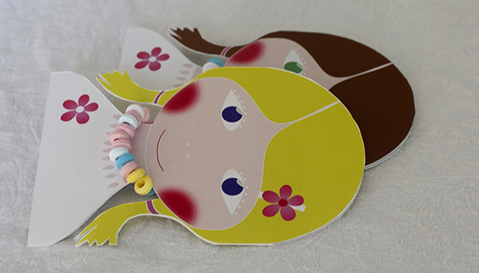
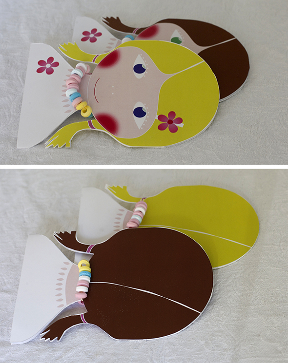

Hice una tarjeta de invitación para una amiga. Inspirado por Gina y su gran idea integrar collares de perlas comestibles a la tarjeta! Si te falta una combinación de color de pelo + color de los ojos, ... escribe un comentario.
